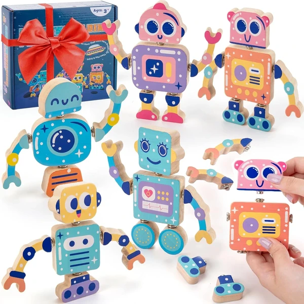
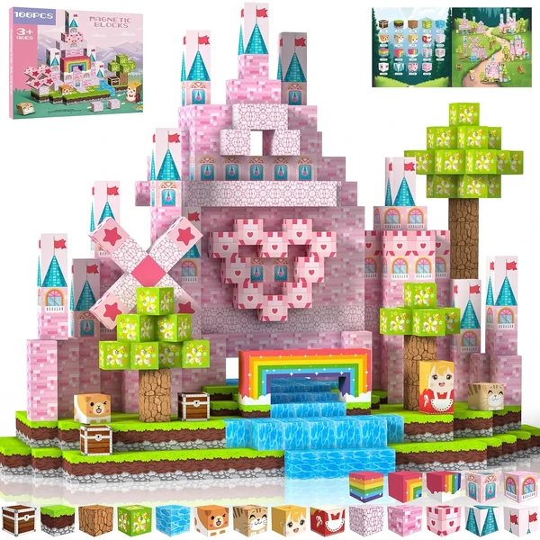
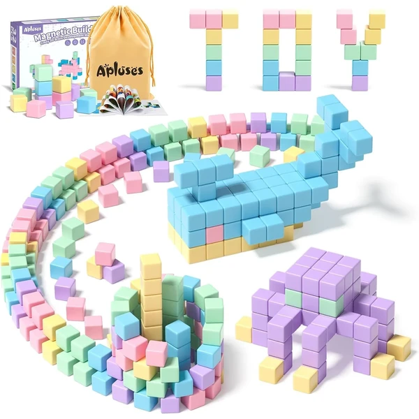
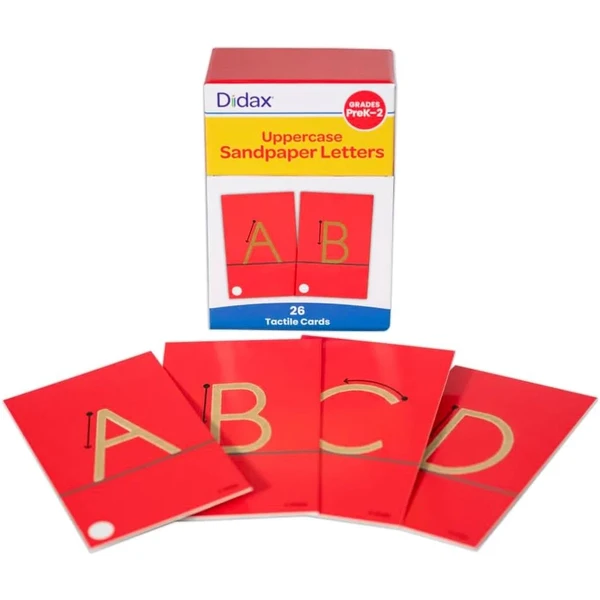
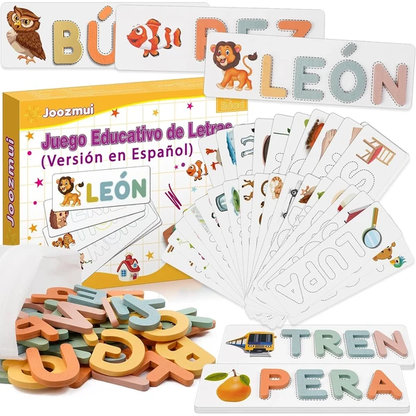
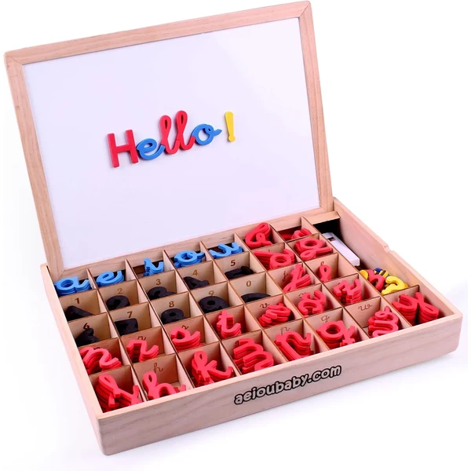
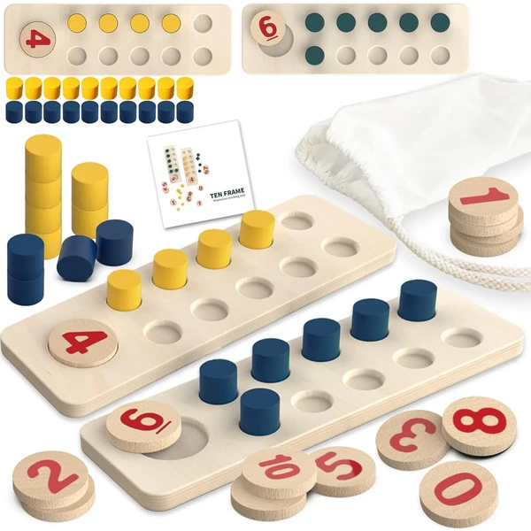
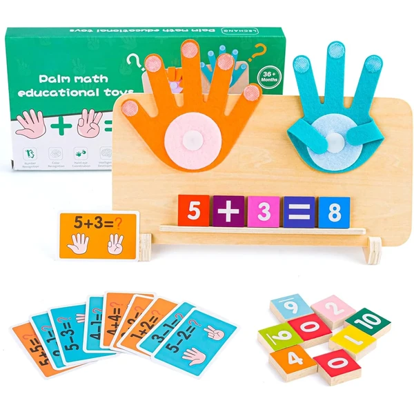
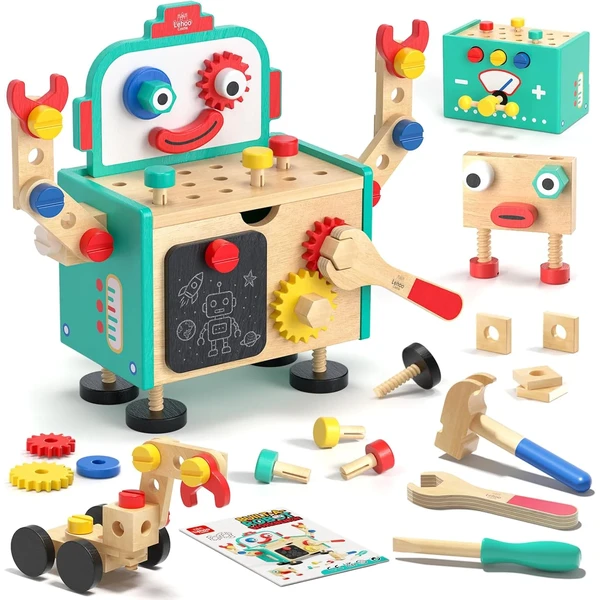

Bloques de construcción SEMKOTREE
Set de veintiocho bloques de construcción de madera con cierre a presión, pensado para un juego abierto y creativo. Las piezas encajan con un simple gesto, favoreciendo la motricidad fina y la imaginación.
⭐ ¿Por qué nos gusta?
- ✔ Cierre a presión, fácil de encajar y separar.
- ✔ Madera maciza con acabado seguro.
- ✔ Favorece la creatividad y el juego abierto.
💬 Lo que más destacan las familias
Las familias destacan que el sistema de encaje resulta muy intuitivo para los niños, y que aguanta bien el uso diario.
Edad recomendada: 3-4 años
Ver en Amazon

Bloques magnéticos de construcción 2cm
Set de cien piezas magnéticas pequeñas para construir estructuras estables sin que se derrumben. Un juego sin pantallas que favorece el pensamiento espacial y la creatividad.
⭐ ¿Por qué nos gusta?
- ✔ Imanes potentes, construcciones más estables.
- ✔ Cien piezas para proyectos más grandes.
- ✔ Alternativa de juego sin pantallas.
💬 Lo que más destacan las familias
Se valora que las construcciones se mantengan en pie mejor que con otros bloques magnéticos, gracias a la fuerza de los imanes.
Edad recomendada: 3-4 años
Ver en Amazon

Set STEM bloques magnéticos Apluses
Set de treinta y dos piezas de bloques magnéticos pensado para el aprendizaje STEM y el juego libre. Compatible con otros sets de construcción magnética, permite ampliar las creaciones con el tiempo.
⭐ ¿Por qué nos gusta?
- ✔ Enfoque STEM para el pensamiento lógico.
- ✔ Compatible con otros sets magnéticos.
- ✔ Posibilidades de construcción prácticamente ilimitadas.
💬 Lo que más destacan las familias
Las familias destacan que se puede combinar con otros bloques magnéticos que ya tuvieran en casa, ampliando las posibilidades de juego.
Edad recomendada: 3-4 años
Ver en Amazon

Letras de lija mayúsculas
Set de letras de papel de lija en mayúsculas, un material clásico Montessori para que el niño reconozca las letras trazándolas con el dedo antes de empezar a escribir.
⭐ ¿Por qué nos gusta?
- ✔ La textura de lija ayuda a memorizar cada trazo.
- ✔ Introduce la escritura de forma sensorial.
- ✔ Material clásico y probado del método Montessori.
💬 Lo que más destacan las familias
Se valora que sea un material sencillo y fiel al material Montessori original, útil como primer paso hacia la escritura.
Edad recomendada: 3-4 años
Ver en Amazon

Juego de letras y palabras Joozmui
Juego de letras con tarjetas de palabras e imágenes a juego, pensado para aprender a leer relacionando cada palabra con su dibujo. Una forma manipulativa de acercarse a la lectura antes de escribir.
⭐ ¿Por qué nos gusta?
- ✔ Tarjetas con imagen y palabra a juego.
- ✔ Favorece el reconocimiento de letras y palabras.
- ✔ Materiales pensados para un uso duradero.
💬 Lo que más destacan las familias
Las familias destacan que es una buena forma de introducir la lectura jugando, sin que resulte una actividad forzada.
Edad recomendada: 3-4 años
Ver en Amazon

Abecedario móvil magnético Montessori
Set completo de letras magnéticas en cursiva ligada, con mayúsculas, minúsculas, números y símbolos matemáticos en espuma EVA. Pensado para formar palabras y operaciones sencillas, y crecer con el niño de la preescritura a las primeras cuentas.
⭐ ¿Por qué nos gusta?
- ✔ Incluye letras, números y símbolos matemáticos.
- ✔ Espuma EVA suave y magnética.
- ✔ Caja de madera para guardar todas las piezas.
💬 Lo que más destacan las familias
Se valora tener letras y números en un mismo set, y que la caja de madera ayude a mantener todo ordenado.
Edad recomendada: 3-4 años
Ver en Amazon

Placas de conteo Montessori TEUVO
Juego Montessori de placas con clavos para practicar el conteo, pensado para introducir los primeros conceptos matemáticos de forma manipulativa. Ideal para jugar en familia o entre varios niños.
⭐ ¿Por qué nos gusta?
- ✔ Introduce el conteo de forma manipulativa.
- ✔ Madera natural de acabado cuidado.
- ✔ Se puede jugar en grupo, como un pequeño reto.
💬 Lo que más destacan las familias
Las familias destacan que es una manera entretenida de practicar el conteo, más allá de contar simplemente con los dedos.
Edad recomendada: 3-4 años
Ver en Amazon

Set matemático Montessori Muyohix
Juego Montessori de matemáticas pensado para practicar el conteo y los primeros conceptos numéricos de forma visual y manipulativa. Un material de madera ecológica adecuado para varios años de uso.
⭐ ¿Por qué nos gusta?
- ✔ Practica el conteo de forma visual y manipulativa.
- ✔ Madera ecológica y duradera.
- ✔ Sirve durante varios años según crece el niño.
💬 Lo que más destacan las familias
Se valora que el material aguante bien el paso de los años y siga siendo útil según el niño avanza en matemáticas.
Edad recomendada: 3-4 años
Ver en Amazon

Caja de herramientas robot Lehoo Castle
Caja de herramientas Montessori 2 en 1 que se transforma en mini mesa de trabajo o en un robot desmontable, con más de diez modelos de herramientas realistas como martillo, llave inglesa y destornillador.
⭐ ¿Por qué nos gusta?
- ✔ Se transforma en mesa de trabajo o robot.
- ✔ Más de diez herramientas realistas incluidas.
- ✔ Madera con bordes lisos y seguros.
💬 Lo que más destacan las familias
Las familias destacan que el robot desmontable es un extra que engancha, más allá del uso como simple caja de herramientas.
Edad recomendada: 3-4 años
Ver en Amazon